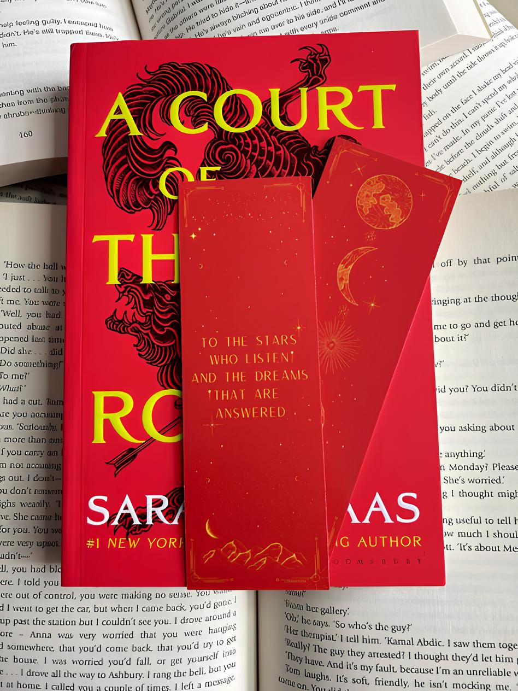

Quem fez o quê?
Adivinha qual personagem que condiz com a história, citação ou característica da questão e mostra ser um leitor atento aos detalhes da saga! Inclui acontecimentos do segundo livro da saga: Corte de Névoa e Fúria.

Descobre o teu parceiro
Incluindo os machos principais dos primeiros três livros (Corte de Espinhos e Rosas, Corte de Névoa e Fúria e Corte de Asas e Ruína), vê qual deles combina mais com tua personalidade e descobre o teu possível parceiro dentro de Prythian! Se a maioria deles já tem uma parceira... acho que não é nosso problema.

Descobre a tua parceira
Incluindo as fêmeas principais dos primeiros três livros (Corte de Espinhos e Rosas, Corte de Névoa e Fúria e Corte de Asas e Ruína), vê qual delas seria a tua parceira com estas perguntas simples! Não tenhas medo de dar um resultado caótico, como a ideia da autora de juntar Lucien e Nesta, porque nós sabemos o que estamos a fazer.

Pode ter acontecido
Será que realmente aconteceu dessa forma? Confere a tua memória na leitura do primeiro livro da saga, Corte de Espinhos e Rosas, neste verdadeiro-ou-falso com meias ou completas informações que poderão - ou não - ter acontecido nesse livro ou na saga em si. Cuidado com as informações 99% corretas, e nada de insultar quem criou as perguntas depois de errar!

Prepara a tua Guerra com Rhysand e Cassian!
Inspirado no terceiro livro da saga, Corte de Asas e Ruína, vê se conseguirias ter equipado um exército com altas ou fracas chances de sucesso na guerra que definiu o destino de Prythian, Hybern e todas as terras feéricas e humanas!